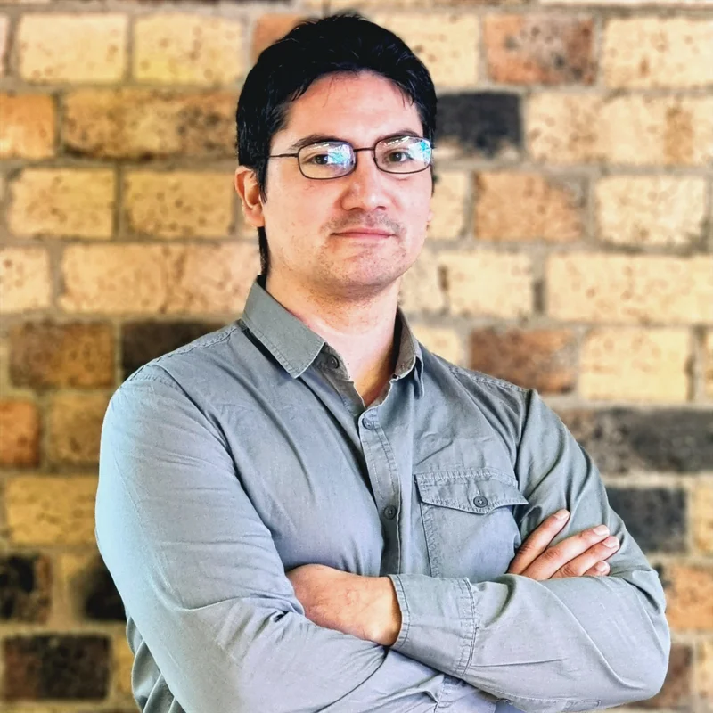

Aland Astudillo
Biomedical engineer, data scientist and AI consultant
Gold Coast, Queensland, Australia · English and Spanish
For ten years I have built data and AI systems for hospitals, governments, universities and companies. The kind that have to keep working after the pilot ends.
What I work on
Most of my work sits in the gap between the people who need something built and the people who build it: gathering requirements, mapping the process, designing and prototyping, then the data science itself. Machine learning and statistical modelling, AI and LLM applications, retrieval augmented generation and knowledge graphs, and AI governance and risk where the setting calls for it.
Mostly in health, government, research and industry, where the data is messy and the constraints are real.
Organisations I work with
- Sparkbrain — founder. Independent AI, data and technology consultancy.
- Clevvi — AI strategy and data science.
- Tedix — collaborator.
- Western Sydney University — Adjunct Fellow, NICM Health Research Institute
- Queensland University of Technology — Visiting Fellow, ARC Training Centre for Behavioural Insights for Technology Adoption, Faculty of Business and Law
- Swinburne University of Technology — collaborator
- Research Graph Foundation — collaborator
- Exonova — technical advisor
- Tellie — technical advisor
Background
- PhD in Sciences (Biophysics and Computational Biology) — Universidad de Valparaíso, Chile
- MSc Engineering Sciences , Biomedical Engineering — Universidad de Valparaíso
- BSc Biomedical Engineering — Universidad de Valparaíso
- Certified Member , Australian Computer Society
- Registered expert , Scimex — Australian Science Media Centre
Research and writing
Peer-reviewed research in signal processing and clustering, with further published work on retrieval augmented generation and knowledge graphs. Around twenty conference presentations across Australia, Chile, Canada and Italy, and a popular-science book on the brain. The full record is on Google Scholar and ORCID.
Applied AI writing
- Unveiling the synergy: retrieval augmented generation meets knowledge graphs — tools and platforms for integrating knowledge graphs with RAG pipelines
- The combined use of RAG and fine-tuning to improve LLM pipelines — when to retrieve, when to fine-tune, and when to do both
- What is LLMLingua? — prompt compression to improve large language model performance
- How to use GROBID to extract text from PDF files — machine-learning extraction of structured information from PDFs
Elsewhere
Contact
The quickest way to reach me is LinkedIn.